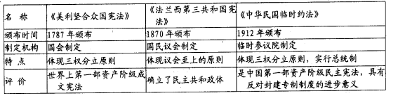
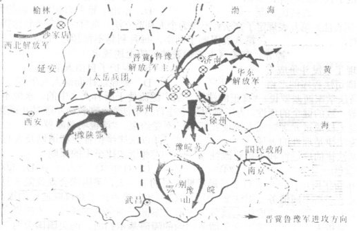
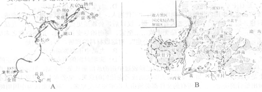
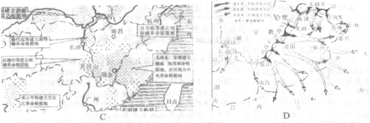
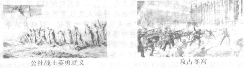
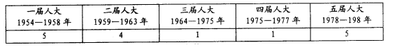
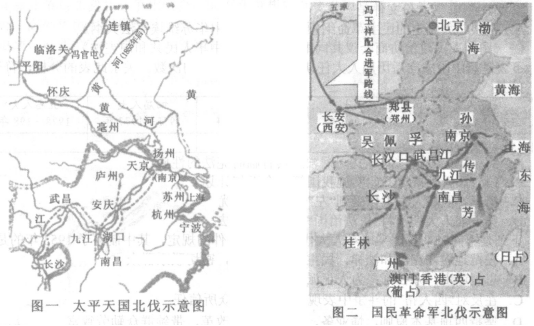

中原名校联盟2013—2014学年高三上期第一次摸底考试
历史试题
（考试时间：90分钟 试卷满分：100分）
第Ⅰ卷 选择题（共60分）
一、本卷共40小题，每小题1．5分，共60分。在每小题给出的四个选项中，只有一项是符合题目要求的。
1．唐德刚在《晚清七十年》中提出“历史三峡论”，将四千多年来中国政治形态变迁分为封建、帝制和民治三大阶段。其中“封建”阶段我国政治制度的主要特点是
A．政权和族权互为表里 B．专制王权披上神权外衣
C．中央对地方直接控制 D．思想统一促进政治统一
2．柳宗元在《封建论》中说：“有叛人而无叛吏，人怨于下而吏畏于上……有叛国而无叛郡……失不在于州而在于兵，有叛将而无叛州……。”这一现象对应的朝代分别是
A．西周、秦朝、三国 B．汉朝、唐朝、明朝
C．秦朝、汉朝、唐朝 D．战国、汉朝、宋朝
3．刘文瑞教授在《中国政治制度史纵论》一书中写道：“秦汉的三公九卿制中，政府官员明显具有皇帝家仆性质：……明清取消宰相制，皇帝直接指挥六部，把家族式统治扩大到整个国家机器。”依据材料的观点推断，隋唐三省六部制的鲜明特点应该是
A．皇权专制得到进一步强化
B．削除了皇帝“家仆”对皇权的威胁
C．建立了以皇权为中心的中央政权组织
D．中央集权的统治进一步巩固
4．易中天在《帝国的终结：中国古代政治制度批判》一书中说：“这是一个帝国制度不断成熟、完善的过程，它表现在中央集权的不断加强。秦创郡县制，汉因之；隋创科举制，唐因之；宋创文官制（文臣将兵制），明因之；明创阁臣制，清因之。”下列说法正确的是
①隋朝开始形成的科举制是封建选官制度的一大进步
②三省六部制标志着我国古代封建国家官僚制度的成熟
③明太祖设置殿阁大学士，标志着内阁的出现
④清康熙时期设立的军机处标志着君主专制制度达到顶峰
A．①② B．①④ C．②④ D．①②④
5．“凡京奏，禁中称文书，必发阁臣票拟。阁票用本、纸、小帖、墨字，内照票拟，或皇上御笔，或宦官代书，具在文书上面用朱字。阁票如有未合上意，上加笔削或发下改票，阁臣随即封上，间有执正强争，也多曲折。”可见，明朝内阁
A．地位很高，负责全国的行政事务 B．是具有决策权的内侍机构
C．是君主专制制度的产物 D．与皇帝权力相互制衡
6．魏源在论及中国古代的用人制度时说：“三代用人，士族之弊，贵以袭贵，贱以袭贱，与封建并起于上古，皆不公之大者……秦、汉以后，公族虽更而士族尚不全革，九品中正之弊，至于上品无寒门，下品无士族……至宋、明而始尽变其辙焉，虽所以教之未尽其道，而其用人之制，则三代私而后世公也”。对这段材料的理解，不正确的是
A．三代的用人制度是世袭的 B．九品中正制弊端严重
C．后世用人以公开始于宋明时期 D．宋明时期的用人制度是相对公正的
7．《利玛窦中国札记》中说：“虽然我们已经说过中国的政府形式是君主制，但它在一定程度上是贵族政体，……如果没有与大臣磋商或考虑他们的意见，皇帝本人对国家大事就不能做出最后的决定。……所有的文件都必须由大臣审阅呈交皇帝。”利玛窦认为中国明朝时
A．君主制不是中国政府的主要形式 B．内阁一定程度上制约着君权
C．君主与内阁大臣拥有同等决策权 D．内阁掌握着明朝的行政大权
8．希腊先哲柏拉图在谈到他生活时代的雅典时说“这里的公民灵魂变得非常敏感，只要有谁建议要稍加约束，他们就觉得受不了，就要大发雷霆……他们真的不要任何人管了，连法律也不放在心上，不管成文的还是不成文的”。这主要表明
A．柏拉图时代的雅典公民充满了自由的精神
B．当时雅典尚没有法律来约束公民
C．柏拉图因为恩师苏格拉底被判有罪而诋毁雅典民主政治
D．雅典的直接民主制使他们面临体制性的危机
9．“因为如果有价值之人发言并且担任议事会成员，这对于和他们同样的人会有好处，但对大众却没有好处。现在任何人只要愿意就可站出来发言，当穷人发言时，他就会寻求他本人以及和他相同之人的利益。……他们（雅典人）认识到尽管穷人无知而贫穷，而有价值之人出色而智慧，但前者的好意要比后者的恶意带来更多的益处。这样的方式也许不能建成理想的城邦，但却非常有利于维护民主政治”。该观点
A．肯定了代议制的理论基础 B．说明了直接民主制的封闭性
C．肯定了雅典直接民主制 D．指出了雅典直接民主制的弊端
10．《十二铜表法》第九表规定了立法者不得为个人利益立法，贪官污吏应受到惩罚，任何人非经审判，不得被处死刑；第八表限制了利率，每月利息不得超过1％；第三表规定了还债的30天“恩惠期”等等。有关《十二铜表法》的上述规定
A．体现了平民斗争成果 B．保护了自由人的利益
C．强调司法程序的严格 D．突显法律面前人人平等
11．古罗马法学家西塞罗说：“真正的法律，是广泛流传于所有人之中的、永恒不变的、与自然和谐一致的健全的理性。为了避免法令违背这个法则，宗教决不能禁止或部分废止它，我们也无权通过元老院或人民使我们自己不受约束。”这说明西塞罗
①认为法律是理性的表现 ②以法律维护社会和谐以及人与自然的和谐
③强调法律的广泛性和不可更改性 ④尊崇法律至上的原则
A．①②③ B．①②④ C．①③④ D．②③④
12．2011年新华网电：距离8月2日最后期限日的前一天，美国国会众议院8月1日最终高票通过了提高美国债务上限法案。国会参议院此前曾否决了众议院通过的提高债务上限。根据美国立法程序，政府提高债务上限的法案需经国会两院通过，才能提交总统签署为法律。分析人士认为，美国避免债务违约的障碍基本扫清。而美国国会两党围绕提高债务上限的讨论仍未结束，这一问题也会成为民主党总统奥巴马寻求连任的重要障碍。该材料未体现的美国政治文化是
A．两党制在美国政坛举足轻重 B．议会中心与共和意识
C．三权分立与制衡原则 D．财政权是国会制约和监督政府的重要手段
13．宪政是现代政治文明的重要特征。下表中关于三部宪法的表述，完全正确的是

A．颁布时间 B．制定机构 C．特点 D．评价
14．孟德斯鸠在《论法的精神》中提出：“在一个国家里，总是有一些人以出身、财富或荣誉著称。不过，如果他们和平民混杂在一起，并且和其他的人一样只有一个投票权，公共的自由将成为对他们的奴役，而且他们不会有保卫这种自由的任何兴趣，因为大多数的决议将会是和他们作对的。”以下是1875年法国宪法的规定，其中与孟德斯鸠上述思想有关联（或受其影响）的是
A．设立间接选举产生的参议院 B．总统有权任命文武官员
C．禁川：王室或皇室家族成为总统 D．设立由普选产生的众议院
15．学者任东来指出：“美国宪法的目的是规范和限制政府的权力，以保护人民免受恶政之苦。换句话说，它要防的是治者之恶，而非被治者之恶。”此观点体现了美国1787年宪法
A．符合美国大多数人的利益 B．各州获得充分自治的权利
C．人民获得广泛的民主自由 D．使美国政府处于无权地位
16．1701年颁布的英国《王位继承法》规定：当今国王和丹麦安娜公主死后且无后嗣时，为保障我们的宗教、法律和自由，制订更详明的规定是必要的和必不可少的。这应当由国王陛下商得贵族院和平民院议员的同意，以国王的权力加以规定。该规定说明英国
A．议会以明确的法律条文来限制王权 B．议会与国王在政治权力上实现了平衡
C．国王有权独立确定英国王位继承人 D．国家权力重心开始由国王转移至议会
17．下图为近代中国某革命时期进军路线图，关于此时期革命活动的相关表述，下列说法正确的是
A．是中国几千年来农民革命战争的最高峰
B．结束了中国两千多年的封建君主专制制度
C．基本上推翻了北洋军阀的反动统治
D．是蒋介石的反革命统治由发展到消灭的转折点

18．太平天国政权从中央到地方建立了军政合一的政权机构；一度宣布废除私营商业，经营公营商业（后又恢复私营商业）；实行“圣库制度”；设立诸匠营与“百工衙”，实行官营手工业制度。社会习俗上，废除买卖婚姻，规定“凡天下婚姻不论财”。这反映了太平天国运动
A．大大推动了中国近代化进程 B．政权的性质日益趋于封建化
C．具有日益脱离广大农民群众的趋势 D．是空想性与进步性的统一体
19．罗荣渠在《现代化新论》一书中说：“在此以后，外国渗透的方式从外贸领域扩大到投资、生产、销售、金融各个领域，直接改变了原有的‘小农—手工业生产方式’，使中国在经济上和财政上都日益陷入对资本主义世界经济体系的依附地位。”要研究这一状况产生的原因，应首选下列哪一不平等条约?
A．《南京条约》 B．《北京条约》 C．《马关条约》 D．《辛丑条约》
20．陈旭麓先生指出：“爱国主义永远是—种打动人心的力量。但从爱国出发走向近代化，与从爱国主义出发回到中世纪——并不同义。”陈先生讲到的后一种“爱国主义”的典型是
A．太平天国运动 B．戊戌变法运动 C．义和团运动 D．辛亥革命
21．1905年2月，陈独秀、柏文蔚联合安徽公学中的先进分子常恒芳等人，在芜湖发起成立岳王会，他们集会宣誓，订立章程，宣称“盖岳武穆抵抗辽金，至死不变，吾人须继其志，尽力排满”。这表明岳王会
A．深受传统封建忠君思想影响 B．与义和团的目标相似
C．其成立反映了国内政治形势 D．与同盟会有本质区别
22．费孝通认为：正因为被礼治惯了，所以在乡土社会里，一说起讼师，大家会联想到挑拨
是非之类的恶行。（辛亥革命后）讼师改称律师，打官司改称起诉，包揽是非改称法律
顾问——这套名词的改变代表了社会性质的改变。这里所说的“社会性质的改变”当指
A．从人治社会到法治社会 B．从宗法社会到官僚社会
C．从旧民主主义社会到新民主主义社会 D．从农业社会到工业社会
23．学者马勇的新著《1911年中国大革命》这样论述1911年的辛亥革命“是中国五千年历史上的重大事件。这个事件的意义是结束了两千年帝制，赶跑了皇帝，建立了共和，是全面现代化的起点。”对于辛亥革命，下列评价不正确的是
A．辛亥革命的胜利结果是实现了现代民族国家的重建
B．辛亥革命的政治手段是刻意模仿一百二十年前的法国
C．辛亥革命的过程前半场是法国式激进革命，后半场是英国式温和革命
D．辛亥革命的目标是刻意模仿美国式的政治架构
24．近代有人在一场战役前分析：“上海是中国的文化经济中心，外国租界多，是国际观瞻的战略要地，不打就退，政治影响太坏，弄不好就会被戴上卖国贼的帽子。……江浙水网地区，敌军的现代化武器用不上。还有人说，我们在上海打起来，可以使敌军整个战略轴线发生改变，让敌军从‘由北而南’的俯攻之态改变成‘由东向西’的仰攻，丧失其主宰战场的时机。”以下说法正确的是
A．该战役发生在解放战争时期 B．该战役使我军战略初步实现
C．该战役发生时列强武力干涉 D．该战役中我军大胜敌军
25．抗日战争唤起了全民族的危机意识和使命意识。在抗日战争中，军队和老百姓相结合，武装斗争与非武装斗争相结合，前方斗争和后方斗争相结合，公开斗争与隐蔽斗争相结合。海外华侨也积极投身于抗日战争。敌后军民广泛开展伏击战、破袭战、地雷战、地道战、麻雀战等，创造了人类战争史上的奇观。根据上述材料，从下面选取一组与之对应的关键词
A．民族觉醒 民族团结 全民抗战 B．使命意识 敌后军民 汪洋大海
C．危机意识 武装斗争 战争奇观 D．军民结合 敌后军民 人民战争
26．“中国的革命正是由这样两种梦想推动着：一是爱国主义者想看到一个新中国傲立于世界民族之林：二是提高处于社会底层的农民的地位，消除古代旧有的阶级的社会差别。”（费正清《观察中国》），下列四幅中国近代军事斗争图所代表的历史时期中，最有利于实现这两个梦想的时期是


27．关于下列图片反映的重大历史事件，说法正确的是

A．都与大规模战争有关 B．都依靠了工农联盟，有广泛的群众基础
C．都以马克思主义为理论指导 D．都建立了无产阶级的社会主义政权
28．普里马科夫认为，1917年俄国政局的一次变动“在政权上取代了专制，俄国第一次成为
共和国”。他论述的是
A．无产阶级取得政权的进步意义 B．社会主义已由理想变为现实
C．社会主义革命爆发具有必然性 D．资产阶级临时政府的进步性
29．某文件明确规定：“保护国家的公共财产和合作社的财产，保护工人、农民、小资产阶级和民族资产阶级的经济利益及其私有财产，发展新民主主义的人民经济，稳步的变农业国为工业国。”这份文件是
A．中共二大制定的民主革命纲领 B．《中华苏维埃宪法大纲》
C．《中国人民政治协商会议共同纲领》 D．《中华人民共和国宪法》
30．下表是新中国成立后历届人大任期时间及召开会议的次数。关于此表的分析，符合史实的是
 A．第一届人大通过的《共同纲领》具有临时宪法的性质
B．第二届人大决定开始实施我国第—个五年计划
C．第三、四届人大工作受到“左”倾错误的干扰
D．第五届人大期间将“依法治国”方针写入宪法
31．下列是不同时期我国某地对人大代表候选人条件的规定，其中制订于1953年的是
A．模范地遵守宪法和法律，民主法治观念强，密切联系群众
B．思想进步，办社好；为人正派，做事公正
C．在反对“四人帮”的斗争中表现较好，为群众所信任
D．坚持四项基本原则，懂业务、有作为、敢改革，带领群众勤劳致富
32．台湾歌手王少峰在其创作的歌曲《海峡两岸》中写道：“相逢太美分离太痛，海峡两岸情意浓。”如果依次审视1949年以后的两岸关系，下列解读错误的是
A．“分离”的直接原因是国共两党的内战 B．“相逢”最早应该在20世纪80年代
C．“太痛”说明两岸人民渴望统一 D．“太美”表明两岸当局都接受“一国两制”
33．《中华人民共和国史》在解释“打扫干净屋子再请客”时引述了毛泽东的一段话：“关于帝国主义对我国的承认问题，不但现在不应急于去解决，就是在全国胜利以后的一个相当长时期内，也不应急于去解决。因为虽然我们愿意按照平等原则同一切国家建立外交关系，但帝国主义是绝不能很快地就以平等态度对待我们的。”上述材料体现了新中国
A．不承认国民政府建立的旧外交 B．取缔列强在华特权的强烈愿望
C．坚决保障社会主义革命的胜利成果 D．坚定地站在社会主义阵营一边
34．有学者认为：“这是新中国外交政策从突出强调意识形态的‘一边倒’，转向较多地考虑国家现实利益而开始走向务实的—个相当重要的标志。”该观点依据的史实是
A．《中苏友好同盟互助条约》的签订 B．和平共处五项原则的提出
C．参加日内瓦会议，推动了会议的进程
D．参加万隆亚非国际会议，提出“求同存异”方针
35．1979年1月29日，邓小平在访问美国时宣布：“我们不再使用‘解放台湾’这个提法了，只要台湾回归祖国，我们将尊重那里的现实和现行制度。”这一主张
A．是对《告台湾同胞书》的发展 B．放弃以武力解决台湾问题的政策
C．明确了“九二共识”的前提和立场 D．使“—国两制”的方针正式形成
36．“这是一场两个意识形态对立的政府之间的战争，同时美国、中国、苏联等18个国家也不同程度地卷入这场战争，这也是在‘冷战’背景下的一场实际战争。由于参战双方签署了停战协议而非和平协议，因此从理论上来讲，这场战争尚未结束。”“这场战争”使
A．朝韩处于长期的对立状态 B．造成了德国的分裂
C．是世界面临第三次世界大战的危险 D．美国陷入了伊拉克战争
37．有学者认为：“伴随着冷战的结束，最直接、最明显的损失是两个前超级大国建立的联盟体系的消失。……全球失去了对混乱和暴力的威慑，相应的，世界的未来少了一种确定性。”对材料观点理解最准确的是
A．结束美苏“冷战”不利于国际社会的稳定 B．美苏联盟体系曾经维护了世界和平
C．“冷战”结束后新的国际力量对比尚未定型 D．动荡的国际局面需要建立单极霸权
38．保罗·约翰逊在《现代：从1919到2000年的世界》中写道：“（20世纪）80年代，人类刮起了一场巨大的求变之风……80年代成为当代史的分界线。民主精神恢复了自信，开始广泛传播。”这场“求变之风”对世界产生的深远影响是
A．改变了世界政治格局 B．壮大了国际社会主义力量
C．导致社会主义阵营瓦解 D．加快了西方政治民主化进程
39．约瑟夫·奈教授2002年指出，当今国际力量的分布有如—盘三维空间的国际象棋：顶部的军事力量大致是单极的，中部的经济力量是多极的，底部包括众多的国家和非国家行为体（恐怖分子、黑客等），力量非常分散。下列表述同约瑟夫·奈教授的看法—致的是
A．同苏联时期相比，俄罗斯的经济实力下降，军事实力并未削弱
B．从某些维度看，“单极世界”和“多极世界”都是比较准确的说法
C．国际力量分布十分复杂，可以说世界多极化的格局已接近形成
D．冷战结束后，美国的军事和经济实力都保持着异常明显的优势
40．美国学者扎卡利亚在《后美国世界》中指出，过去500年内，世界范围内出现了三次结构性的权力转移。每一次权力转移都重新塑造了国际秩序。第—次权力转移是西方世界的崛起，始于15世纪；第二次权力转移是美国的崛起，发生于19世纪末；第三次权力转移是当下正在经历着的“他者的崛起”。关于第三次权力转移对国际秩序产生的影响，下列说法正确的是
A．冲击以欧洲为中心的世界格局 B．建立了公正合理的国际政治经济新秩序
C．促进世界格局的多极化趋势 D．直接导致人口爆炸、恐怖主义等严重社会问题
第Ⅱ卷 非选择题（共40分）
41．（13分）阅读材料，回答问题。
▲材料一：在资产阶级革命过程中，资产阶级颁发了一系列法律文件来巩固资产阶级革命的成果。1689年，英国议会制订的《权利法案》，以明确的法律条文限制国王的权利，被视为英国君主立宪制政体确立的标志；1776年北美大陆会议发表《独立宣言》，以资产阶级启蒙思想为根据，宣告了美利坚合众国的诞生，是美国资产阶级纲领性文件，被视为最早的《人权宣言》；1787年，美国制定的1787年宪法，规定了美国一整套国家体制，被视为近代第一部资产阶级成文宪法；1789年法国制宪会议发表的《人权宣言》以天赋人权、自由平等原则，否定了封建主义的王权和特权。1875年法国国民议会颁布《法兰西第三共和国宪法》，确立了共和政体。
▲材料二：美国的共和政体吸收了雅典民主的理念，保障“人民”对政府的参与、信任和制约，意在追求“全体公民的最大幸福”。它用代表制改造了罗马的公民大会，使之成为“委托——代理”的“间接民主”机构。它借鉴了君主制的长处，强化了行政权的功能和作用，并将它赋予单独一个人行使。同时，美国的建国者还从历代的分权理论和制度中获得借鉴，把它加以改造，转化为一种复合的分权和制衡体制，以防止政府某一分支侵夺或垄断权力，从而保证“有限政府”理念的实现。总而言之，美国的共和政体在一定意义上是对雅典民主、罗马共和制和英国宪政君主制加以综合吸收和创造性转化的结果。
——李剑鸣《“共和”与“民主”的趋同——美国革命时期对“共和政体”的重新界定》
▲材料三：民国初年是一个非常的时代，处于制宪政治时期，而非常态政治时期。制宪政治要解决的是一个国家的根本大法，因此，参与制宪的各个党派虽然有各自的价值、信念和利益，但要求他们在制宪的时候，暂时放下党派之私见和私利，从国家的长远和整体利益出发，制定超越党派的永久宪法。……美国在建国之初也曾出现过私人利益泛滥、普遍出现腐败、派系与党争等一系列问题。……在费城制宪会议的过程之中，虽然各州、派系之间有利益冲突，但为了实现共同的国家未来和长远的政治秩序，大家一方面相互承认对方的逐利冲动，另一方面寻求利益整合和政治妥协的可能性。美国人坚信，只要有适当的制度性安排，各种分散的私人利益可以“共和”为民族的整体利益。
——许纪霖《辛亥后民初的制度转型为何失败?》
▲材料四：很简单，如果没有辛亥革命，中国可能会通过渐进改良的方式实现社会的转型。在辛亥革命之前，清政府已经在进行改革。比如，那时制订的法律，在今天看也是很超前的。 ——李泽厚《告别辛亥革命》
请回答：
（1）依据材料一，概括西方近代资本主义民主政治制度的基本特点。（3分）
（2）依据材料二和所学知识，指出美国共和政体“对雅典民主、罗马共和制和英国宪政君主制加以综合吸收和创造性转化”的表现。（3分）
（3）根据材料三，概括民国初期、美国独立初期面临的相同政治问题。（3分）
（4）结合所学知识，简析材料四观点在认识上的局限性。根据上述材料，简要阐述你对制度转型的看法。（4分）
42．（15分）中国近现代外交，外交理念与世界意识发生了变化。
▲材料一：“中国”如“夏”，位于宇宙模式的中心，享有号令天下的最高权威；而周围各国如“夷”，位于这个模式的边缘，必须向中国臣服……“诸侯用夷礼则夷之，夷而进于中国则中国之”，文化作为区隔“夷”和“夏”的标准……
——摘编自（宋）石介《中国论》
▲材料二：关于鸦片战争的爆发原因，美国学者费正清在《伟大的中国革命》中指出：“大家都认为鸦片战争是一次典型的非正义战争，是鸦片染成的战争……其实，根本是北京愿不愿意和英国订立平等国家关系的问题。”
▲材料三：（天朝和中国的使用频率）道光最初10年，“天朝”50余次，中国不满10次；道光十六年（1936年）四月至十七年四月天朝6次，中国5次；道光十八年一月至五月，天朝6次，中国14次，中国首次超过了天朝。据《筹办夷务始末（咸丰朝）》，最初五卷中天朝出现5次。至光绪年间，天朝已经式微，几乎不用了。天朝使用次数减少后，出现在史料中的自称主要是大清国、中国。
鸦片战争后，清廷一些官员一方面出于对西方列强强权的义愤，力图解除不平等条款对中国的束缚，伸张自身的权益；另一方面，出于与西方国家办理外交事务的实际需要，这些官员逐渐认识到有必要了解西方在调整国际关系方面的法律原则、规则和规章制度。因此力主将近代国际法引入中国……从19世纪60年代起，清政府接受英、法、美、饿等国公使入京设馆。作为对等性的反应，1868年，清政府向欧洲派出了第一个外交使团。1877年，中国第一个驻外使节也被派往伦敦，翌年，在欧美其他国家开始设立使馆。
▲材料四：1949年3月5日，毛泽东说：“我们必须尽可能地首先同社会主义国家和人民民主国家做生意，同时也要同资本主义国家做生意。”……《共同纲领》第57条规定：“中国人民共和国可在平等和互利的基础上，与各外国政府和人民恢复并发展通商贸易关系。”
2 0世纪70年代末80年代初，邓小平说：“如果从明朝中叶算起，到鸦片战争，有三百多年的闭关自守，长期闭关自守，把中国搞得贫穷落后，愚昧无知……关起门来搞建设是不行的，我们吃过这个苦头，我们的老祖宗吃过这个苦头。闭关自守只能是更加落后于世界，落后于时代。如果不开放，再来个闭关自守，50年要接近经济发达国家水平，肯定不可能。
（1）根据材料一概括中国古代对字宙和世界体系的认识。这一认识指导下的对外交往的理念是什么? （2分）
（2）根据材料二结合所学知识，评述费正清关于鸦片战争原因的观点。（4分）
（3）材料三和材料一相比较，清政府的世界意识和外交理念发生了什么变化?分析这一变化的主要原因。（3分）
（4）根据材料四毛泽东和邓小平两代领导人都主张融入世界。简要分析两个时代与世界融合不同状况的原因。（6分）
43．（12分）阅读材料，完成下列要求。
历史地图包含了政治、经济、文化等多种信息。

比较图一、图二，提取三项有关这两个军事行动历史变迁的信息，并结合地图及所学知识予以说明。
历史参考答案
1．【解析】选A。 本题考查的是中国政治制度的发展阶段及其主要特点。这里所说的“封建”阶段不是指封建社会，而是指夏商周时期，夏商周时期的政权与血缘纽带关系密切结合，故应选A；夏商周时期存在王权，并以神权强化王权，但此时中央集权制度尚未确立，所以不能称为“专制”王权，“专制王权披上神权外衣”始于西汉董仲舒确立新儒学，故可排除B项;中央直接控制地方最初是通过郡县制实现的，是第二阶段专制主义中央集权制度的典型特征，故C项不正确；“思想统一促进政治统一”是“帝制”阶段的特点，典型事例有秦朝“焚书坑儒”和西汉“罢黜百家，独尊儒术”等，因此D项错误。
2．【解析】选C。 本题主要考查学生准确解读材料信息的能力，材料中“有叛人而无叛吏”是指农民起义之时各地官员不敢随农民军一同造反，因为郡县制推广后各地官员由中央直接任免，反叛中央有极重的惩罚。“有叛国而无叛郡”，体现了郡国并行制。“叛将”对应的是唐朝的藩镇将领的反叛。而随着宋朝吸取唐末藩镇割据的教训，加强专制主义中央集权，特别是中央加强了对军事的控制，不能对应“有叛将”。
3．【解析】选A。 本题主要考查学生准确解读材料信息的能力，材料中说明了皇帝为强化皇权不断地对中央政府的官制进行调整，所以A项符合题意，B项表述错误，C D两项材料中无法体现。
4．【解析】选A。 本题考查学生对古代政治制度基本知识的掌握。③内阁是在明成祖时设立的，④军机处是在雍正时期。三省六部制使封建官僚机构形成完整严密的体系，有利于皇帝的集权与政令的贯彻执行，提高了行政效率，充分发挥了国家机构的效能，是中国官制史的重大变革，它标志着封建政治制度的成熟。故选A。
5．【解析】选C。 本题考查教材基本知识和对材料的阅读分析能力。AB两项史实错误，D项“与皇帝权力相互制衡”与题干信息不符。由题干“阁票如有未合上意，上加笔削或发下改票，阁臣随即封上，间有执正强争，也多曲折”可以看出，阁臣权力来自于皇帝，阁臣很难坚持自己的意见。故选C。
6．【解析】选C。 “至宋、明而始尽变其辙焉，虽所以教之未尽其道，而其用人之制，则三代私而后世公也”说明宋朝“已经是”用人以公，并没有说明“开始于”宋明时期。联系所学可知，这是科举制度的作用，科举制源自于隋朝，到唐朝时完备，故此题应选C项。
7．【解析】选B。 由材料“虽然我们已经说过中国的政府形式是君主制”可知A项错误。“如果没有与大臣磋商或考虑他们的意见，皇帝本人对国家大事就不能做出最后的决定”说明B项正确，C项错误。“所有的文件都必须由大臣审阅呈交皇帝”说明D项错误。
8．【解析】选D。 只要有谁建议要稍加约束，他们就会觉得受不了，就要大发雷霆……他们真的不要任何人管了，连法律也不放在心上，不管成文的还是不成文的。”说明雅典直接民主忽视公民的政治素养，容易导致国家权力的滥用和误用，成为政治腐败、社会动乱的隐患。因此选D。A项不是题干主要表达的意思，B项本身说法错误，C项与题干无关。
9．【解析】选C。 材料反映了雅典民主运作方式是保证每个公民的发言权，运用每个雅典公民的智慧治理国家，这实质是肯定了雅典民主政治制度，答案为C。
10．【解析】选A。 《十二铜表法》是平民与贵族斗争的成果，题干中的“立法者不得为个人利益立法”“限制了利率，每月利息不得超过1%”“ 规定了还债的30天‘恩惠期’”等规定更能体现保障了平民的利益，体现了平民斗争成果，A项正确；B、C、D三项无法体现。
11．【解析】选B。首先要搞清“真正的法律”即自然法。西塞罗认为自然法是各民族制定的各种法律之上的更高的适用于一切民族永恒的法律原则。自然法是与自然即事物的本质相适应的法，其本质为正确的理性。所以他不是强调一般意义法律的广泛性和不可更改性，而是强调“真正的法律”即理性。所以③应该排除。
12．【解析】选B。 就题干信息“美国国会两党围绕提高债务上限的讨论仍未结束，这一问题也会成为民主党总统奥巴马寻求连任的重要障碍”“ 政府提高债务上限的法案需经国会两院通过，才能提交总统签署为法律”可以看出ACD三个选项均正确。美国是典型的三权分立体制，因此B项“议会中心”错误。
13．【解析】选D。 《法兰西第三共和国宪法》颁布时间是1875年，故A错误；《美利坚合众国宪法》是制宪会议制定，故B不正确；《中华民国临时约法》实行责任内阁制，C故不正确。
14．【解析】选A。 理解题干材料，孟德斯鸠的意思是：在一个从专制走向民主政治的国家里也要保证那批占人口极少数的社会上层贵族也能和平民一样有参与民主政治的权力，才能使不同的社会人群都拥有参与民主政治的平衡。法国1875年宪法规定，参议员是在地方选举产生的精英中再选举而产生的，有参议院的精英制定国家政策，然后提交众议院表决。这样能让人口比例较少的上层贵族有更高的参与民主政治的几率，符合题意，故选A项。D项由民间普选产生众议院难以让人数比例极少的上层贵族获得参与民主政治的机会，C、B项无法从题干中得出。
15．【解析】选A。 本题考查学生对历史材料的理解能力。据材料中“以保护人民免受恶政之苦”分析，说明A项正确。该宪法体现了中央集权，各州有一定的自主权，B项说法不准确，；C项不是材料强调的主要内容，而且对当时来说也不正确；1787年宪法是要实现中央集权，D项说法错误。
16．【解析】选A。 从材料 “以国王的权力加以规定”信息可判断，A项正确。1689年《权利法案》颁布，使国家权力重心开始由国王转移至议会，故B、D两项错误；从材料“国王陛下商得贵族院和平民院议员的同意”，可知C项错误。
17．【解析】选D。 由图可以分析出此为解放战争时期战略反攻进军路线图。A项说的是太平天国运动，B项说的是辛亥革命，C项说的是北伐战争。故选D。
18．【解析】选D。 由题干材料“一度宣布废除私营商业”“ 实行‘圣库制度’”，可以看出其空想性。由“社会习俗上，废除买卖婚姻，规定‘凡天下婚姻不论财’”，可以看出其进步性。故选D。其它选项都具有片面性或者错误。
19．【解析】选C。 从材料“在此以后，外国渗透的方式从外贸领域扩大到投资、生产、销售、金融各个领域”可以看出西方列强对中国的经济侵略从商品输出为主到以资本输出为主的转变,《马关条约》反映了西方列强资本输出的要求。故选C。AB项还只是商品输出阶段；D项在《马关条约》后，不能谈“首选”。
20．【解析】选C。 “从爱国主义出发回到中世纪”反映了用“中世纪”（落后的）方式进行爱国，这一爱国行为与近代化相悖。太平天国运动更侧重反封建，与材料中“爱国主义”关系不大，戊戌变法运动、辛亥革命与“中世纪”不符。故只有C项符合题意。
21．【解析】选C。 据材料中“尽力排满”排除A项；义和团的目标是“扶清灭洋”与材料中排满思想不符，排除B项；与同盟会纲领“驱除鞑虏，恢复中华，平均地权，建立民国”中有相似的排满思想。故选C项。
22．【解析】选A。 在四个选项中，只有A项指出了题干信息的实质。辛亥革命并未实现CD的转变，B项说的是奴隶社会到封建社会的转变，因此排除。
23．【解析】选A。 辛亥革命后，创立的共和国实行立法、司法、行政、监察等五权分立，学习的是美国的政治体制；内阁首脑对议会负责，学习的是法国的政治体制；辛亥革命前半截暴力革命，后半截南北和谈，清帝退位，类似于英国的温和的方式；因此BCD均正确。A项错误，辛亥革命的胜利果实被袁世凯窃取，未能实现现代民族国家的重建。故选A。
24．【解析】选B。 考查学生材料解读和知识迁移能力。由“上海”“外国租界多”“戴上卖国贼的帽子”可以看出不是国共之间战争，排除A。结合“让敌军从‘由北而南’的俯攻之态改变成‘由东向西’的仰攻”和所学知识分析，该战役应该是淞沪战役，这样排除C、D选项。
25．【解析】选A。 题干材料强调抗日的有军队、老百姓、海外华侨，斗争的方式也是多样性，既有武装斗争，也有非武装斗争，具体战争的种类也比较多，所有这些充分体现了全民族民族意识的觉醒、全民族团结以及全民族的抗战等。与之吻合的是A项、而B、D两项主要强调敌后军民的抗战，范围较小，而C项强调的武装斗争，也与题干材料不吻合。所以正确答案为A项。
26.【解析】选D。 此题的两个梦想即民族富强和农民翻身，随着解放战争的逐步胜利和土地革命的深入进行，这两个梦想逐步实现，显然选择D项。
27．【解析】选A。 观察图片可知：图一反映的历史事件是巴黎公社；图二反映的事件是十月革命。正确答案是D。A项二者分别与普法战争和一战有关；B项巴黎公社未能发动广大农民，缺乏工农联盟；C项巴黎公社没有以马克思主义为理论指导；D项巴黎公社不属于社会主义政权。故选A项。
28．【解析】选D。 本题考查学生对历史事件的分析能力。根据题干信息“在政权上取代了专制……”分析，说明应是1917年由俄国资产阶级领导的推翻封建王朝的二月革命，其性质是资产阶级革命，因此应选D项。
29．【解析】选C。从“变农业国为工业国”可先排除A、B两项；从“保护私有财产、发展新民主主义的人民经济”可排除D项(D项1954年12月颁布，此时已经开始三大改造)。C项体现了新民主主义社会的过渡性质。
30．【解析】选C。从表中看1964至1977年召开次数明显很少，说明从1954年第一届人大召开后，第三届、第四届召开会议减少，这时期恰值文革时期，左倾错误干扰，故选择C项。《共同纲领》是1949年政协会议上通过的；一五计划开始于1953年；依法治国写入宪法是在1999年九届人大期间，故排除A、B、D三项。
31．【解析】选B。 项宪法法律应在1954年之后，项反对“四人帮”是文革期间及其之后，项“四项基本原则”“ 敢改革”是在改革开放之后，排除。故选B。
32．【解析】选D。 依据所学知识，1949年国民党败退台湾，造成了两岸的分裂，所以两岸的分裂是内战遗留问题,排除A项；1987年台湾当局被迫允许台湾居民赴大陆探亲，排除B；两岸的分裂后，两岸人民渴望统一 ，排除C；台湾民进党是“台独势力”，并不接受“一国两制”，符合题意，故选D项。
33．【解析】选B。 本题考查学生对新中国外交实行三大政策的时代特征及目的的理解。A项是对另起炉灶的理解故排除；C项是三大改造和1954年宪法颁布故也应排除；D项说的是“一边倒”故排除。
34．【解析】选B。 本题考查的是对和平共处五项原则的理解。新中国成立后和平共处五项原则标志着新中国外交政策的成熟，体现了我国外交政策逐渐减走向开放性、包容性，日益成为国与国之间解决利益、纠纷的国际准则。A项依然体现意识形态，CD项不能用“开始”。故选B。
35．【解析】选A。 中国政府“不承诺放弃使用武力解决台湾问题”，故B项错误；“九二共识”是1992年提出的，故C项不正确；“一国两制” 方针确立于20世纪80年代初期，故D项不正确；告台湾同胞书》发表于1979年1月1日 ，宣布采用和平方式统一祖国的方针，故A项正确。
36．【解析】选A。 本题主要考查学生对材料的分析能力。由材料“这是一场两个意识形态对立的政府之间的战争，同时美国、中国、苏联等18个国家也不同程度地卷入这场战争”“‘冷战’背景下”可知，这场战争应当是朝鲜战争。B、C并非实际战争。伊拉克即海湾战争并没有签署停战协议，D错误。
37．【解析】选C。 关键信息：全球失去了对混乱和暴力的威慑，相应的，世界的未来少了一种确定性。A、B两项有所体现，但不符题意；D项题干未能体现。
38．【解析】选A。 据材料可知：这场“求变之风”发生时间在80年代，其结果是“民主精神恢复了自信，开始广泛传播”（资本主义民主）所以可以断定这场“求变之风”就是20世纪80年代东欧和苏联社会主义国家的改革与剧变，其最终结果是导致东欧剧变苏联解体，进而引起世界格局的变化，故选A项。这场剧变导致社会主义力量严重削弱、社会主义运动严重受挫，故排除B项；早在1960年中苏关系恶化时社会主义阵营就开始瓦解故排除C项；D项与材料不吻合故排除。
39．【解析】选B。 苏东剧变后，俄罗斯虽然仍不失为一个大国，但经济实力和军事实力都大为削弱，故A不符合史实；美国尽管经济地位受到欧盟和日本的挑战，但是其军事实力却保持着异常明显的优势，因此当今世界格局尽管呈现了“一超多强”的局面，但却日益呈现多极化趋势。奈教授认为军事力量是单极的，而经济力量是多极的，体现了他对当今世界格局的多维度认识。故选B。
40．【解析】选C。 美国的崛起冲击了以欧洲为中心的世界格局，故A错误；B项“建立了”的表述与史实不符；D项“直接导致”的说法太绝对，故排除；当今世界格局的多极化趋势不断加强，C正确。
41．（1）特点：通过立法确立民主政治；建立健全议会民主制度；倡导天赋人权，自由平等
等原则。（3分）
（2）表现：实行代议制的民主形式；赋予总统极大的行政权；构建“分权制衡”机制。（3分）
（3）相同问题：都存在党派之争、利益群体之争；都急需制定宪法；都需要建立稳定的政
治体制，实现国家的长治久安。（3分）
（4）局限性：将革命与改良对立，认为辛亥革命打断了中国社会转型的步伐；不能准确区
分立宪派改良和封建朝廷改良之问的巨大区别。（2分）
看法：循序渐进、创新与借鉴（革命与改良）都是制度转型的有效方式；妥协与斗争都是制度转型的策略。（2分）
42．(1)认识：中国是宇宙的中心，是世界的中心（1分）。理念：夷夏观念下的朝贡外交（礼
番外交）（1分）。
(2)费正清认为鸦片战争的发生是因为中国实行“闭关锁国”政策，不愿“与英国订立平等
国家关系”而导致的（1分）。这一观点是错误的（1分），是站在西方立场上做出的结论
（1分）；没有看到战争的根本原因是工业革命后的英国要急于用武力打开中国市场（1分）。
(3)变化：清朝统治者开始抛弃传统的天朝上国意识，转向学习西方，逐渐形成近代国家平
等的世界意识和对等的外交交往理念。（1分）
原因：鸦片战争失败，民族危机和统治危机严重，民族自尊心严重受挫（1分）；为了解除不平等条约的威胁，维护国家利益，急需要了解近代国际外交知识（1分）。
(4)毛泽东时代没有（没有完全）融入世界（1分）：国际上处于两极格局下，美苏激烈斗争，世界局势紧张；美国为首的资本主义国家对中国实行政治上不承认，经济上封锁，企图扼杀新中国；国内左倾错误发展（三点答出任意两点即得2分）。
邓小平时代融入世界（1分）：恢复在联合国的合法地位、中美关系正常化、中日建交等打破了外交僵局；1978年十一届三中全会纠正了左倾错误，全党工作重点转移到了经济建设上来，开始改革开放；世界多极化、全球化迅速发展，形成了相对宽松的国际环境（三点答出任意两点即得2分）。
43．答案：信息1：北伐的对象发生了变化。（2分）
说明：图一讨伐的是清政府（1分），图二讨伐的是北洋军阀。（1分）
信息2：北伐的中心区域发生了变化。（2分）
说明：图一主要范围在黄河流域的北方地区（1分），图二主要范围在长江流域的南方地区（1分）。
信息3：北伐的力量、线路不同。（2分）
说明：图一力量、路线单一（1分），图二国共合作，多路并举（1分）。
信息4：北伐面临的形势不同（2分）
说明：图一缺乏支援（1分），图二形成了南北配合之势（1分）。
（其他言之有理，也可酌情给分，总分不能超过12分）